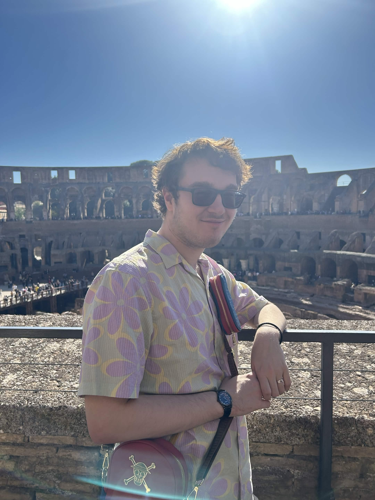
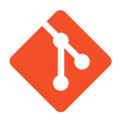
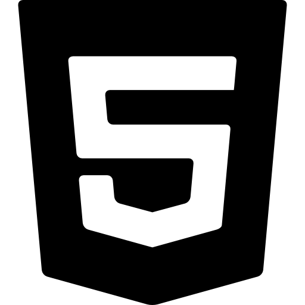

About Me

I am a 22 year old university graduate, with a degree in Computer Science Bsc from Keele University. In my university course, I developed personal skills such as teamworking and leadership through my various modules across my 4 years. Alongside those skills, I learnt various coding languages such as HTML, CSS and Java. I also developed other coding based skills such as cyber security practices and database systems through Oracle.
In my free time, I enjoy playing video games and actively competing in card game tournaments. I have one cat named Lili. One of my greatest achievements would be my Third Year dissertation based around usability in Games Console dashboards. I am very proud of how much research I did for the project and how indepth I went into it.
Skills

